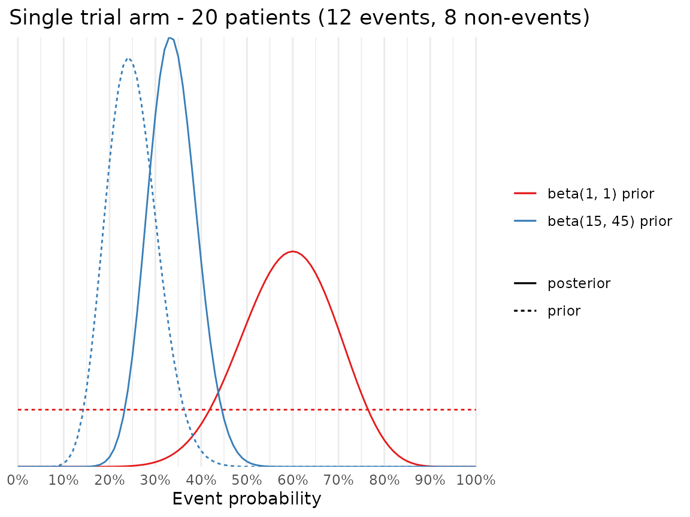

This vignette provides an advanced example on how to:
- Specify a trial design with
setup_trial()using user-written functions for generating outcomes and drawing samples from the posterior distributions - Transform the raw outcome estimates in a way appropriate for your needs
- Derive and specify prior probability distributions
The manual for setup_trial() contains another example
(more succinctly annotated); see the Examples sections
in ?setup_trial(). As an alternative to using custom
functions, the convenience functions setup_trial_binom()
and setup_trial_norm() may be used for simulating trials
with binary, binomially distributed or continuous, normally distributed
outcomes, using sensible defaults and flat priors.
This vignette is intended for advanced users and assume general
knowledge of writing R functions and specifying prior distributions for
(simple, conjugate) Bayesian models. Before reading this vignette, we
highly encourage you to read the Basic examples vignette (see
vignette("Basic-examples", "adaptr")) with more basic
examples using the simplified setup_trial_binom() function
and a thorough discussion of the settings applicable to all trial
designs.
Preamble
In this example, we set up a trial with three arms, one
of which is the control, and an undesirable binary outcome
(e.g., mortality).
This examples creates a custom version of the
setup_trial_binom() function using non-flat priors for the
event rates in each arm (setup_trial_binom() uses flat
priors), and returning event probabilities as percentages (instead of
fractions), to illustrate the use of a custom function to summarise the
raw outcome data.
While setup_trial() attempts to validate the custom
functions by assessing their output during trial specification, some
edge cases might elude this validation. We, therefore, urge users
specifying custom functions to carefully test more complex functions
themselves before actual use.
If you go through the trouble of writing a nice set of functions for generating outcomes and sampling from posterior distributions, please consider adding these to the package. This way, others can benefit from your work and it helps validate them. See how on the GitHub page under Contributing.
Although the user-written custom functions below do not depend on the
adaptr package, as the first thing we load the package:
library(adaptr)
#> Loading adaptr package (version 1.2.0).
#> See 'help("adaptr")' or 'vignette("Overview", "adaptr")' for help.
#> Further information available on https://inceptdk.github.io/adaptr/.–and then set the global seed to ensure reproducible results:
set.seed(89)We define the functions and (for illustration purposes and as a
sanity check) print their outputs. They are, then, invoked by
setup_trial() (in the final code chunk of this
vignette).
Functions for generating outcomes
This function should take a single argument (allocs), a
character vector containing the allocations (names of trial
arms) of all patients included since the last adaptive
analysis. The function must return a numeric vector, regardless
of actual outcome type (so, e.g., categorical outcomes must be encoded
as numeric). The returned numeric vector must be of the same length, and
the values in the same order as allocs. That is, the third
element of allocs specifies the allocation of the third
patient randomised since the last adaptive analysis, and
(correspondingly) the third element of the returned vector is that
patient’s outcome.
It sounds complicated, but it becomes clearer when we actually
specify the function (essentially a re-implementation of the built-in
function used by setup_trial_binom()):
get_ys_binom_custom <- function(allocs) {
# Binary outcome coded as 0/1 - prepare returned vector of appropriate length
y <- integer(length(allocs))
# Specify trial arms and true event probabilities for each arm
# These values should exactly match those supplied to setup_trial
# NB! This is not validated, so this is the user's responsibility
arms <- c("Control", "Experimental arm A", "Experimental arm B")
true_ys <- c(0.25, 0.27, 0.20)
# Loop through arms and generate outcomes
for (i in seq_along(arms)) {
# Indices of patients allocated to the current arm
ii <- which(allocs == arms[i])
# Generate outcomes for all patients allocated to current arm
y[ii] <- rbinom(length(ii), 1, true_ys[i])
}
# Return outcome vector
y
}To illustrate how the function works, we first generate random
allocations for 50 patients using equal allocation probabilities, the
default behaviour of sample(). By enclosing the call in
parentheses, the resulting allocations are printed:
(allocs <- sample(c("Control", "Experimental arm A", "Experimental arm B"),
size = 50, replace = TRUE))
#> [1] "Control" "Experimental arm B" "Experimental arm B"
#> [4] "Experimental arm B" "Experimental arm B" "Experimental arm A"
#> [7] "Experimental arm A" "Experimental arm A" "Experimental arm A"
#> [10] "Experimental arm A" "Experimental arm B" "Experimental arm B"
#> [13] "Experimental arm B" "Control" "Experimental arm B"
#> [16] "Control" "Experimental arm A" "Experimental arm A"
#> [19] "Experimental arm A" "Experimental arm B" "Control"
#> [22] "Control" "Experimental arm B" "Control"
#> [25] "Experimental arm A" "Control" "Experimental arm A"
#> [28] "Control" "Experimental arm B" "Experimental arm B"
#> [31] "Control" "Experimental arm B" "Control"
#> [34] "Control" "Experimental arm A" "Experimental arm B"
#> [37] "Control" "Experimental arm A" "Experimental arm A"
#> [40] "Experimental arm A" "Experimental arm B" "Experimental arm A"
#> [43] "Control" "Experimental arm B" "Control"
#> [46] "Control" "Control" "Control"
#> [49] "Experimental arm A" "Experimental arm A"Next, we generate random outcomes for these patients:
(ys <- get_ys_binom_custom(allocs))
#> [1] 0 0 0 0 0 0 1 1 0 0 0 0 0 0 0 0 1 1 1 0 0 0 0 0 0 1 0 0 0 0 1 0 0 0 0 0 0 0
#> [39] 0 0 0 1 1 0 0 1 0 1 1 0Functions for drawing posterior samples
The setup_trial_binom() function uses beta-binomial
conjugate prior models in each arm, with beta(1, 1)
priors. These priors are uniform (≈ “non-informative”) on the
probability scale and corresponds to the same amount of information as
provided by 2 patients (1 with and 1 without an event), described in
greater detail by, e.g., Ryan et al, 2019 (10.1136/bmjopen-2018-024256).
Our custom function for generating posterior draws also uses beta-binomial conjugate prior models, but with informative priors. Informative priors may prevent undue influence of random, early fluctuations in a trial by pulling posterior estimates closer to the prior when limited data are available.
We seek relatively weakly informative priors centred on previous knowledge (or beliefs), and so before we can actually define a function for generating posterior draws based on informative priors, we need to derive such a prior.
Informative priors
We assume that we have prior knowledge corresponding to a belief that
the best estimate for the true event probability in the
control arm is 0.25 (25%), and that the true event
probability is between 0.15 and 0.35 (15-35%) with 95% probability. The
mean of a beta distribution is simply
[number of events]/[number of patients].
To derive a beta distribution that reflects this prior belief, we use
find_beta_params(), a helper function included in the
adaptr (see ?find_beta_params for
details):
find_beta_params(
theta = 0.25, # Event ratio
boundary = "lower",
boundary_target = 0.15,
interval_width = 0.95
)
#> alpha beta p2.5 p50.0 p97.5
#> 1 15 45 0.1498208 0.2472077 0.3659499We thus see that our prior belief prior roughly corresponds to
previous randomisation of 60 patients of whom 15 (alpha)
experienced the event and 45 (beta) did not.
Even though we may expect event probabilities to differ in the non-control arms, for this example we consider this prior appropriate for all arms as we consider event probabilities smaller/larger than those represented by the prior unlikely.
Below, we illustrate the effects of this prior compared to the
default beta(1, 1) prior used in
setup_trial_binom() for a single trial arm with 20 patients
randomised, 12 events and 8 non-events. This corresponds to an estimated
event probability of 0.6 (60%), far more than the expected 0.25 (25%).
This could come about by random fluctuations when few patients have been
randomised, even if our prior beliefs are correct.

Next, we illustrate the effects on the same prior after 200 patients have been randomised to the same arm, with 56 events and 144 non-events, which corresponds to an estimated event probability of 0.28 (28%), which is more similar to the expected event probability.
When comparing to the previous plot, we clearly see that once more patients have been randomised, the larger sample of observed data starts to dominate the posterior, so that the prior exerts less influence on the posterior distribution (both posterior distributions are very alike despite the very different prior distributions).
Defining the function to generate posterior draws
There are a number of important things to be aware of when specifying this function. First, it must accept all the following arguments (with the exact same names, even if you do not used them in your function):
-
arms: character vector of the currently activearmsin the trial. -
allocs: character vector of the allocations (trialarms) of all patients randomised in the trial, including those randomised toarmsthat are no longer active. -
ys: numeric vector of the outcomes of all patients randomised in the trial, including those randomised toarmsthat are no longer active. -
control: single character, the currentcontrolarm;NULLin trials without a commoncontrol. -
n_draws: single integer, the number of posterior draws to generate for each arm.
Alternatively, unused arguments can be left out and the ellipsis
(...) included as the final argument in your function.
Second, the order of allocs and ys must
match: the fifth element of allocs represents the
allocation of the fifth patient, while the fifth element of
ys represent the outcome of the same patient.
Third, allocs and ys are provided for
all patients, including those randomised to
arms that are no longer active. This is done as users in
some situations may want to use these data when generating posterior
draws for the other (and currently active)
arms.
Fourth, adaptr does not restrict how posterior samples
are drawn. Consequently, Markov chain Monte Carlo- or variational
inference-based methods may be used, and other packages supplying such
functionality may be called by user-provided functions. However, using
more complex methods than simple conjugate models substantially
increases simulation run time. Consequently, simpler models are
well-suited for use in simulations.
Fifth, the function must return a numeric matrix with
length(arms) columns and n_draws rows, with
the currently active arms as column names.
That is, each row must contain one posterior draw for each arm.
NA’s are not allowed, so even if no patients have been
randomised to an arm yet, valid numeric values should be returned (e.g.,
drawn from the prior or from another very diffuse posterior
distribution). Even if the outcome is not truly numeric, both the vector
of outcomes provided to the function (ys) and the returned
matrix with posterior draws must be encoded as numeric.
With this in mind, we are ready to specify the function:
get_draws_binom_custom <- function(arms, allocs, ys, control, n_draws) {
# Setup a list to store the posterior draws for each arm
draws <- list()
# Loop through the ACTIVE arms and generate posterior draws
for (a in arms) {
# Indices of patients allocated to the current arm
ii <- which(allocs == a)
# Sum the number of events in the current arm
n_events <- sum(ys[ii])
# Compute the number of patients in the current arm
n_patients <- length(ii)
# Generate draws using the number of events, the number of patients
# and the prior specified above: beta(15, 45)
# Saved using the current arms' name in the list, ensuring that the
# resulting matrix has column names corresponding to the ACTIVE arms
draws[[a]] <- rbeta(n_draws, 15 + n_events, 45 + n_patients - n_events)
}
# Bind all elements of the list column-wise to form a matrix with
# 1 named column per ACTIVE arm and 1 row per posterior draw.
# Multiply result with 100, as we're using percentages and not proportions
# in this example (just to correspond to the illustrated custom function to
# generate RAW outcome estimates below)
do.call(cbind, draws) * 100
}We now call the function using the previously generated
allocs and ys.
To avoid cluttering, we only generate 10 posterior draws from each arm in this example:
get_draws_binom_custom(
# Only currently ACTIVE arms, but all are considered active at this time
arms = c("Control", "Experimental arm A", "Experimental arm B"),
allocs = allocs, # Generated above
ys = ys, # Generated above
# Input control arm, argument is supplied even if not used in the function
control = "Control",
# Input number of draws (for brevity, only 10 draws here)
n_draws = 10
)
#> Control Experimental arm A Experimental arm B
#> [1,] 30.96555 29.34973 29.26143
#> [2,] 30.47382 23.22668 25.08249
#> [3,] 31.04807 31.76577 19.81416
#> [4,] 17.00712 24.30809 16.36256
#> [5,] 21.31251 27.74615 22.63147
#> [6,] 25.50944 24.16283 30.29049
#> [7,] 16.60420 29.49526 28.75436
#> [8,] 25.17899 33.29374 30.87149
#> [9,] 23.72043 27.78537 29.89836
#> [10,] 30.50004 28.43694 26.62115Importantly, less than 100 posterior draws from each
arm is not allowed when setting up the trial specification, to avoid
unstable results (see setup_trial_binom()).
Specifying the function to calculate raw outcome estimates
Finally, a custom function may be specified to calculate raw summary estimates in each arm; these raw estimates are not posterior estimates, but can be considered the maximum likelihood point estimates in this example. This function must take a numeric vector (all outcomes in an arm) and return a single numeric value. This function is called separately for each arm. Because we express results as percentages and not proportions in this example, this function simply calculates the outcome percentage in each arm:
fun_raw_est_custom <- function(ys) {
mean(ys) * 100
}We now call this function on the outcomes in the
"Control" arm, as an example:
Setup the trial specification
With all the functions defined, we can now setup the trial specification - as stated above, some validation of all the custom functions is carried out when the trial is setup:
setup_trial(
arms = c("Control", "Experimental arm A", "Experimental arm B"),
# true_ys, true outcome percentages (since posterior draws and raw estimates
# are returned as percentages, this must be a percentage as well, even if
# probabilities are specified as proportions internally in the outcome
# generating function specified above
true_ys = c(25, 27, 20),
# Supply the functions to generate outcomes and posterior draws
fun_y_gen = get_ys_binom_custom,
fun_draws = get_draws_binom_custom,
# Define looks
max_n = 2000,
look_after_every = 100,
# Define control and allocation strategy
control = "Control",
control_prob_fixed = "sqrt-based",
# Define equivalence assessment - drop non-control arms at > 90% probability
# of equivalence, defined as an absolute difference of 10 %-points
# (specified on the percentage-point scale as the rest of probabilities in
# the example)
equivalence_prob = 0.9,
equivalence_diff = 10,
equivalence_only_first = TRUE,
# Input the function used to calculate raw outcome estimates
fun_raw_est = fun_raw_est_custom,
# Description and additional information
description = "custom trial [binary outcome, weak priors]",
add_info = "Trial using beta-binomial conjugate prior models and beta(15, 45) priors in each arm."
)
#> Trial specification: custom trial [binary outcome, weak priors]
#> * Undesirable outcome
#> * Common control arm: Control
#> * Control arm probability fixed at 0.414 (for 3 arms), 0.5 (for 2 arms)
#> * Best arm: Experimental arm B
#>
#> Arms, true outcomes, starting allocation probabilities
#> and allocation probability limits:
#> arms true_ys start_probs fixed_probs min_probs max_probs
#> Control 25 0.414 0.414 NA NA
#> Experimental arm A 27 0.293 NA NA NA
#> Experimental arm B 20 0.293 NA NA NA
#>
#> Maximum sample size: 2000
#> Maximum number of data looks: 20
#> Planned looks after every 100
#> patients have reached follow-up until final look after 2000 patients
#> Number of patients randomised at each look: 100, 200, 300, 400, 500, 600, 700, 800, 900, 1000, 1100, 1200, 1300, 1400, 1500, 1600, 1700, 1800, 1900, 2000
#>
#> Superiority threshold: 0.99 (all analyses)
#> Inferiority threshold: 0.01 (all analyses)
#> Equivalence threshold: 0.9 (all analyses) (only checked for first control)
#> Absolute equivalence difference: 10
#> No futility threshold
#> Soften power for all analyses: 1 (no softening)
#>
#> Additional info: Trial using beta-binomial conjugate prior models and beta(15, 45) priors in each arm.As setup_trial() runs with no errors or warnings, the
custom trial has been successfully specified and may be run by
run_trial() or run_trials(). If the custom
functions provided to setup_trial() calls other custom
functions (or uses objects defined by the user outside these functions)
or if functions loaded from non-base R packages are used, please be
aware that exporting these objects/functions or prefixing them with
their namespace is necessary if simulations are conducted using multiple
cores. See run_trial() for additional details.